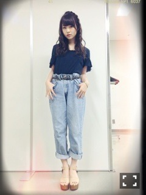
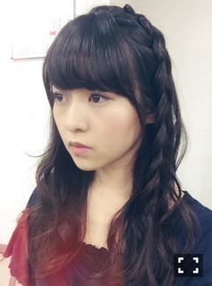
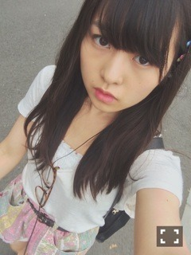
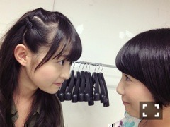

| 2014/07 24 Thu | 意識改革。586回目 |
っっっっや！
AKB48新聞、
ひなちまと飛鳥と3人の
インタビューが載ってます。
主にアンダーライブのことについて。
1ページにドンと載るとは
思ったなかったので見たとき
びっくりしたぜ！！！
そして今週の乃木のの！
MCひめたんに伊藤ちゃんずです。
ぜひ聴いてください！
◇全国握手会

がうっち がおー
18歳おめでとう！
途中手に落書きされるし、
握手会始まるのに
遅刻しそうになってすっげえ勢いで
手引っ張って走り出すし...
なんでだろう。
きゅんとした、、
怖い！怖いよこの子！
アンダーライブを通して
いっぱい話すようになりました。
きいちゃんファンの方、
ありがとうございました！
やっぱりミニライブないのは寂しいね。
◇個別握手会

トップス SACAI LUCK
デニム used
サンダル mystic

この髪型すき！
SACAI LUCKのTシャツは
もちろんお母さんのです...
秋冬のコレクション素敵すぎる。

これもハイウエストで履いてる！
だいぶポップだ。
アンダーライブ
ユニットリクエスト
のぎ天
ふぉんじょ
MV
個人PV
学力テスト
ブログ
メール
私服
絵
プリンシパル
くだらないこと
真剣な話
いろいろお話できて幸せでした。
来てくださったみなさん
ありがとう。
ひとりBicycleはまってる方
多いみたいで嬉しいよー
てか右下で手拍子してるだけの
まりっか人気すぎてる。
他のまりっかも見てあげて笑
優里21歳、真洋19歳
お誕生日おめでとう！
天真爛漫なふたりだー
ふたりとも私服すき笑
優里のレーン隣やったけど、
優里らしくメルヘンでかわいかった！
真洋の生誕祭でカメラ小僧したけど、
久しぶりにサスケ聴けて感動した〜
......
5部終わりに
れなりんの卒業式がありました。
社交ダンスで始まったのが
れなりんらしい。

同い年として学業を頑張ってる
れなりんを尊敬しています。
3rdから仲良くなって、
よくふざけ合うようになった！
ね、りんちゃん笑

どこまでも真面目で純粋で、
本当に天然でみんなを
癒してくれたれなりん。
ずっとずっと応援してます。
夢に向かって頑張れ！
まりか
コメント(461)
2014/07/24 00:30